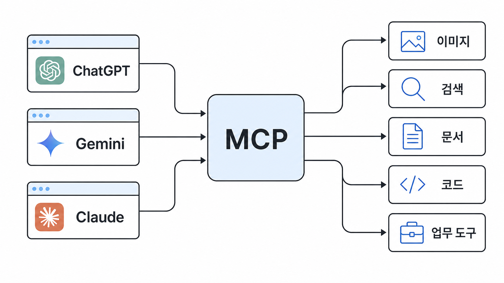
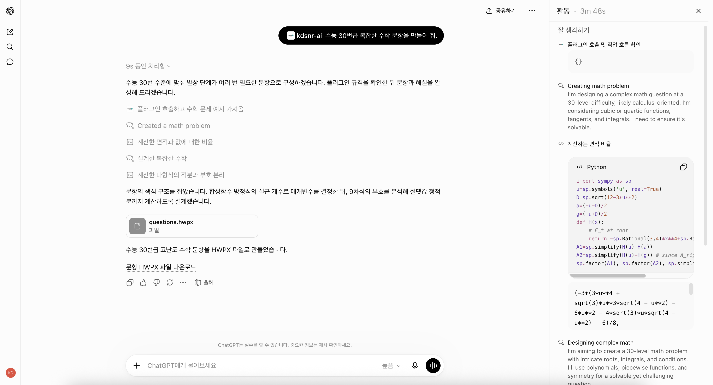
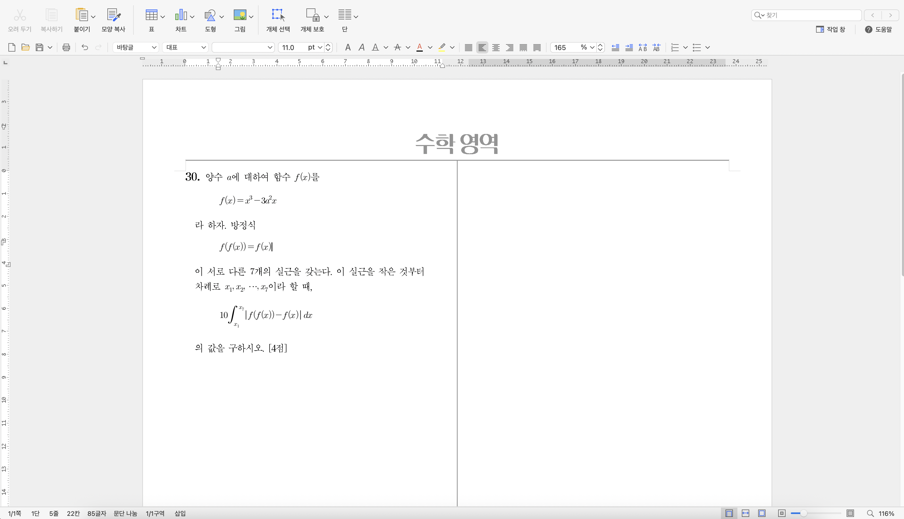
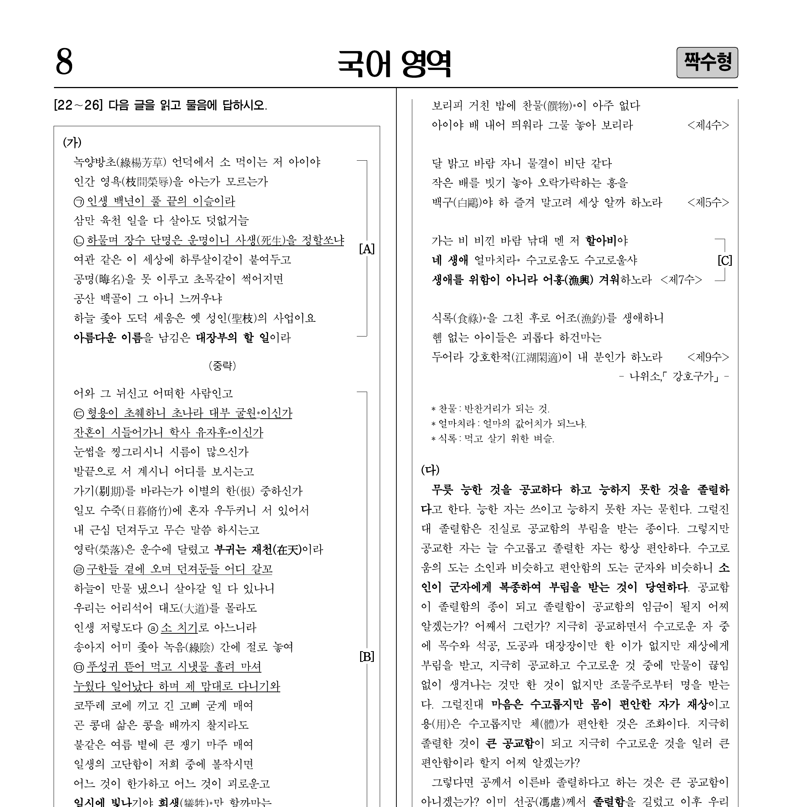
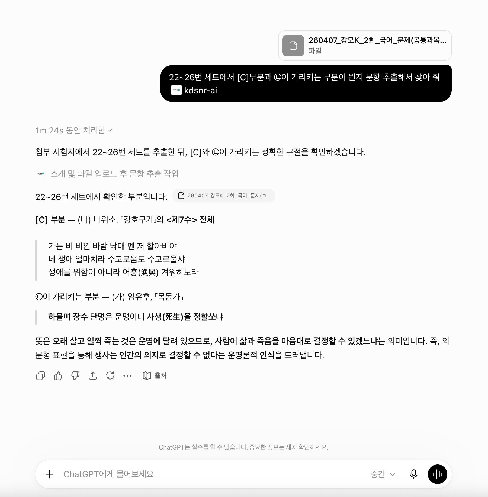

MCP
GPT·Gemini·Claude와 협업하여 좋은 문항 만들기
ChatGPT는 이제 업무에 있어 없어서는 안 될 필수품이 되어 가고 있습니다. 모델의 성능이 향상됨에 따라 단순하고 반복적인 업무를 GPT에게 맡길 수 있게 되었고, 이는 분야를 막론하고 업무 생산성을 크게 향상시켰습니다.
출제 업무는 어떨까요? 번뜩이는 아이디어와 날카로운 논리적 함정을 설계하고, 이를 자연스럽게 문항에 녹이는 일은 AI가 대신하기 어렵습니다. 하지만 다음과 같은 보조 역할은 어쩌면 해낼 수도 있겠다고 생각했습니다.
- 여러 초벌 문항에 흩어진 아이디어들을 한곳으로 모아 정리
- 문항에 사소한 계산 오류가 있지는 않은지 검토
- 문항의 내용이 현실 세계의 논리 또는 사실과 어긋나지는 않는지 점검
- 기존 기출 문항을 불러오고 중복 출제는 없는지 확인
어쩌면 AI와 대화하던 중 갑자기 생각난 아이디어를 즉시 HWPX 문항 파일로 조판해 줄수도 있을 지도요.
이 글에서는 ChatGPT, Gemini, Claude 등 범용 AI가 기존에 가졌던 한계를 극복하고, 인간 출제 전문가를 더욱 효과적으로 보조할 수 있도록 고안한 강남대성수능연구소 전용 AI 도구인 MCP를 소개하겠습니다.
1. MCP란?
MCP는 Model Context Protocol의 약자로, Claude의 개발사 Anthropic에서 공개한 개념입니다. 에이전트 시대가 되면서 AI는 단순히 텍스트를 출력하는 데 그치지 않고, 기존에는 사람이 화면을 통해 직접 조작하던 여러 작업 프로그램을 다룰 수 있게 되었습니다. 이것이 가능한 이유는 AI 에이전트에게 일종의 ‘도구’를 쥐여 주었기 때문입니다. 예를 들면 다음과 같습니다.
- 이미지를 편집하는 도구: 포토샵, 일러스트레이터
- 웹을 검색하는 도구: 크롬 브라우저
- 엑셀·PPT를 편집하는 도구: Microsoft Office
- 코드를 실행하는 도구: Python 인터프리터, C++ 컴파일러
- 기타 사용자가 직접 제작한 도구: 매일 아침 주요 거래처에 이메일을 작성하는 자동화 스크립트
이외에도 수천, 수만 가지의 도구들이 점차 AI가 활용할 수 있는 형태로 개발되고 있습니다. MCP는 이러한 도구들을 우리가 매일 사용하는 GPT, Gemini, Claude 등에 더욱 쉽게 연동할 수 있게 하는 일종의 플러그인입니다. 사용자가 원하는 에이전트 도구를 장착할 수 있도록 이들 서비스는 모두 MCP 연결을 지원하고 있습니다. 2026년 7월 기준

2. KDSNR-AI MCP
강남대성수능연구소에서 개발한 출제 업무 특화 MCP에는 다음과 같은 도구들이 포함되어 있습니다.
각 도구의 자세한 설명은 Pipeline API 포스팅을 참고해 주세요.
- AI가 한글 파일(HWP·HWPX)에서 문항에 담긴 밑줄, 수식, 그림을 정확히 읽을 수 있도록 하는 도구
- AI와 대화하던 중 아이디어가 생기면 바로 문항 파일(HWPX) 초본으로 출력하는 도구
- AI가 평가원, 교육청, 강K, 수능특강 등 여러 출처의 문항과 자료를 조회하고 검색할 수 있도록 하는 도구 2026년 7월 예정
- 출제한 문항의 예상 정답률을 전용 ML 모델로 추정할 수 있도록 서버와 통신하는 도구 2026년 8월 예정
최초 한 번 설치한 뒤에는 별도의 유지보수 없이 위 기능을 이용할 수 있습니다.
3. Use Case
1) 문항 파일 생성
- MCP를 활성화한 후 “이런 수능 수학 문항을 HWPX로 만들어 줘”라고 부탁해 보세요.
- AI가 요구사항에 맞는 문항 HWPX 파일을 직접 만들고 다운로드 링크를 출력합니다.


2) 문항 읽기
- 기존에는 AI가 정확히 읽을 수 없었던 한글 파일 또는 PDF 파일을 통째로 넣고 “이 파일에서 수능형 문항을 추출해 줘”라고 부탁해 보세요.
- 이미지, [A] 브라켓, 밑줄, 수식 등을 정확하게 읽는 모습을 확인할 수 있습니다.


3) PDF 변환하기
- HWP·HWPX 파일을 AI 채팅창에 넣고 “이 파일을 PDF로 변환해 줘”라고 부탁해 보세요.
- 한글 프로그램 없이 한글 파일을 PDF 문서로 변환할 수 있습니다.
4) 향후 추가 기능
기출 검색과 정답률 예측 기능도 차례로 추가될 예정입니다.